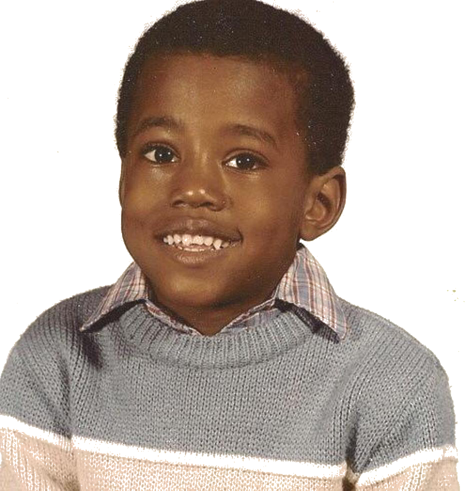

Kanye west was born in Atlanta (Georgia) on June 8, 1977.
When he was 3 years old his parents divorced.
Because of the divorce he and his mon Donda C had to move to Chicago while he his father Ray West became an Christian Counseler later on in his life.
Ye grew up in a middle-class family. He attended Polaris High School in Oak Lawn, Illinois after moving here. At the age of ten, Ye moved with his mother to Nanking, China,
because his mother had to teach there at the University of Nanking.
Ye showed early on that he had a great affinity with art; he started writing poetry when he was five years old. When Ye started rapping, his mother supported him financially so that he could work in a studio.
Despite it being a small studio with a microphone hanging from the ceiling, she has always supported and encouraged him. During this period he learned producer and DJ No I.D. with whom he soon became good friends.
No I.D. became Ye's mentor, teaching him how to sample and produce.
When Ye turned 20, he dropped out of school to work on his musical career.
